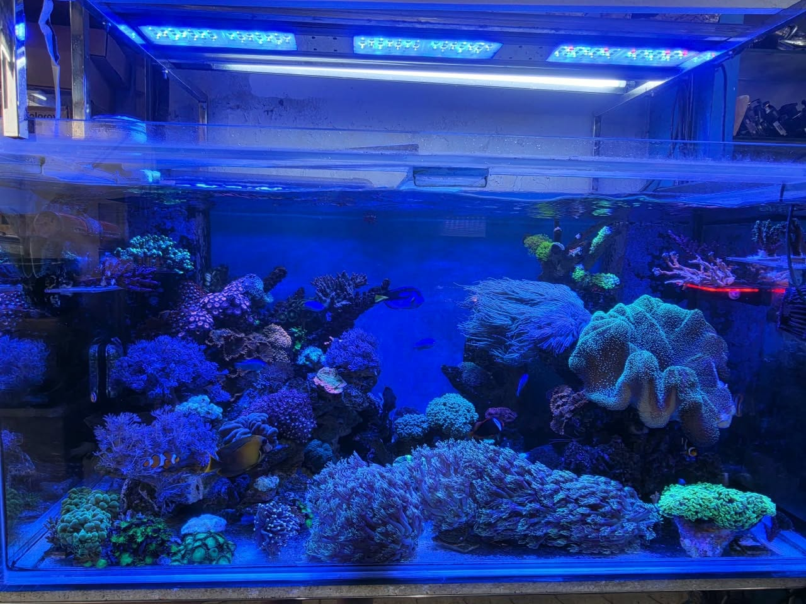
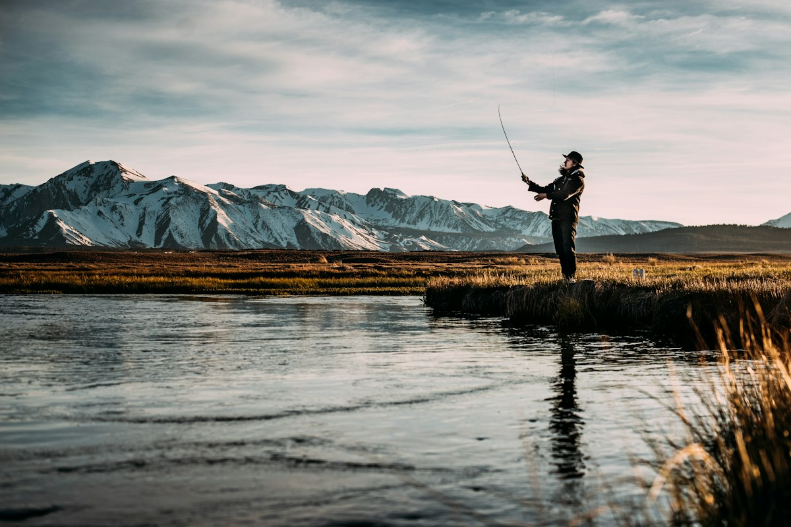

JOHOR BAHRU · MALAYSIA
珊瑚水族与钓具中心
把热爱，
养成日常。
一缸水，收藏自然的生机。
一支竿，开启下一段期待。
在珊瑚，找到属于你的水中世界。
FOR THE LOVE OF WATER.
为每一份与水有关的热爱。

A LITTLE OCEAN.A WHOLE LOT OF WONDER.
01 / THE UNDERWATER WORLD
↗把海底的缤纷，带进生活。
海水鱼 & 珊瑚✳淡水观赏鱼✳鱼缸 & 水族器材✳钓具 & 配件
01 / FIND YOUR WORLD
你的热爱，
从这里开始。
从家中的一方水景，到户外的一次抛竿。
探索不同品类，让每份兴趣都有新的可能。
门店实拍
02 / MEET CORAL
生活里的风景，
从热爱里长出来。
专业海水缸制作，大量珊瑚与海水鱼出售。
更特别的，各种陆龟，雪雕，刺猬等等动物出售
淡水鱼种类琳琅满目.
本地也有售卖高级钓具
欢迎到珊瑚水族馆参观
03 / INSIDE CORAL
欢迎光临
从门口的招牌，到鱼缸里的缤纷。先看看店里的风景，再来亲自探索。
04 / CORAL IN MOTION
让水中世界，
动起来。
观看珊瑚 Facebook 专页的视频，
发现静态画面之外的乐趣。
门店视频 02
在 Facebook 观看 ↗
垂钓主题示意图 · 非本地钓点05 / DROP BY & SAY HELLO
屏幕之外，
到店里发现更多。
把喜欢的水中风景，慢慢逛进生活。
我们在新山皇后花园等你。
01
Taman Ungku Tun Aminah,
81300 Johor Bahru, Johor, Malaysia
门店地址
181, Jalan Pahlawan 1,Taman Ungku Tun Aminah,
81300 Johor Bahru, Johor, Malaysia
02
营业时间
- 星期一至星期六
- 09:30 – 19:00
- 星期日
- 09:30 – 18:30
公开目录所列时间；节假日或营业安排可能调整，建议出发前致电确认。
GOOD TO KNOW
来之前，
你可能想知道。
想找特定鱼种或钓具，可以先询问吗？
可以通过 Facebook 专页或致电 +60 7-556 1084 联系门店。提供想找的鱼种、器材型号或钓具名称，方便门店确认现货与详情。
第一次准备鱼缸，应该带什么资料？
建议先整理鱼缸尺寸、打算饲养的鱼种、现有器材和预算，再联系门店了解合适的选项。产品选择和具体建议以门店沟通为准。
哪里可以查看最新产品与门店消息？
请浏览珊瑚水族与钓具中心 Facebook 专页。本页用于品类介绍，实际价格、库存及营业安排请向门店确认。
YOUR NEXT DISCOVERY STARTS HERE.